Sobre o Wave84
O Wave84 começou como um trabalho escolar com o objetivo de estudar e apresentar a história dos videogames e sua evolução ao longo dos anos.
Mesmo sendo um projeto acadêmico, temos a intenção de expandir e transformar o Wave84 em um site completo, dedicado a explorar a cultura gamer de forma mais ampla e profissional.
Queremos compartilhar curiosidades, falar sobre consoles clássicos, tendências, tecnologias e tudo que conecta os games ao cinema, à música e à arte.
Imagens da História dos Games
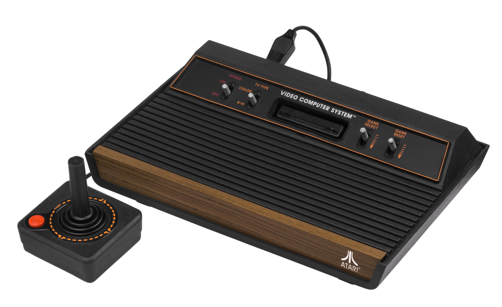
Atari 2600 — Um dos pioneiros dos consoles caseiros.
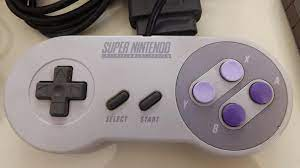
Controle do Super Nintendo — Ícone dos anos 90.
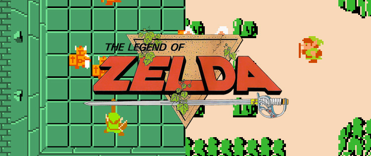
Jogos em 8 bits — The Legend of Zelda.
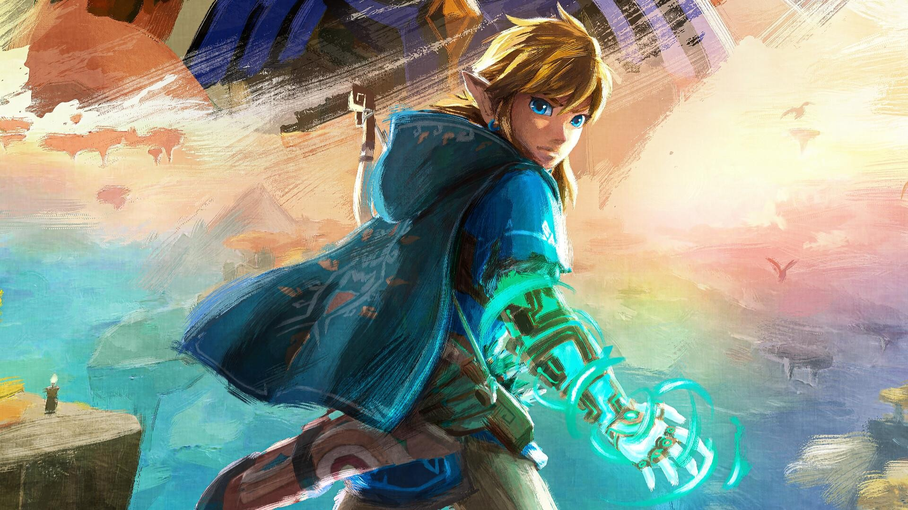
A evolução dos consoles — Da pixel art ao fotorrealismo.
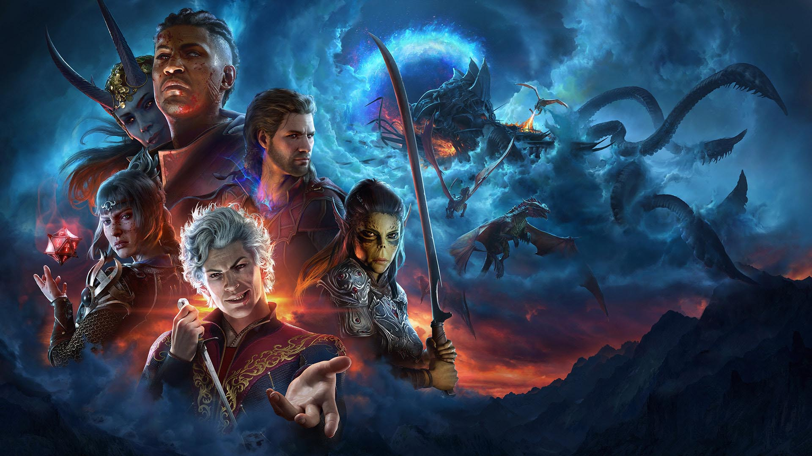
Baldur's Gate 3 - conquistou o título de Jogo do Ano em 2023, consolidando-se como um marco na indústria dos games.
 ELDEN RING NIGHTREIGN — O crepúsculo eterno sobre as Terras Intermédias
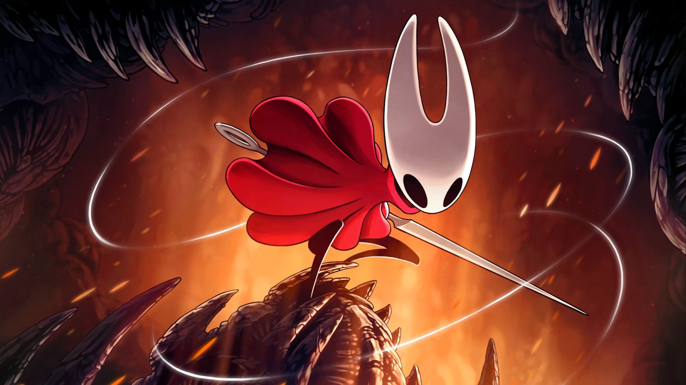
Hollow Knight: Silksong — A aguardada sequência que leva os jogadores ao reino de Pharloom.
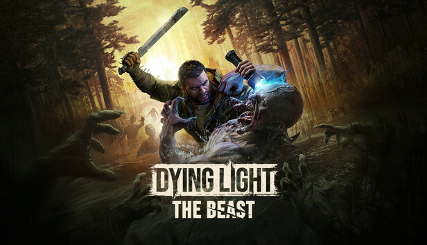
Dying Light: The Beast — Nova expansão que introduz mecânicas de sobrevivência radical e criaturas mutantes.
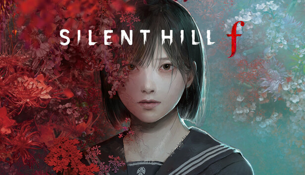
Silent Hill F — O renascimento da franquia de terror com uma história ambientada no Japão.
ELDEN RING NIGHTREIGN — O crepúsculo eterno sobre as Terras Intermédias
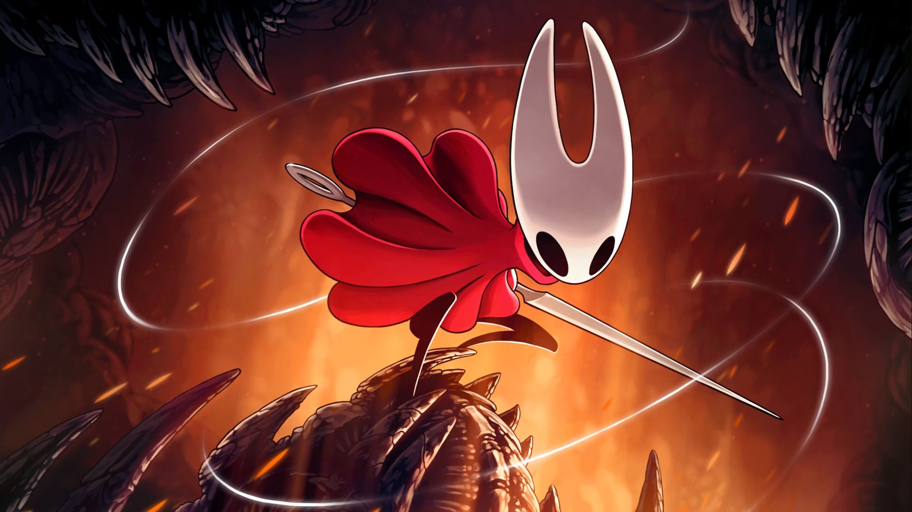
Hollow Knight: Silksong — A aguardada sequência que leva os jogadores ao reino de Pharloom.
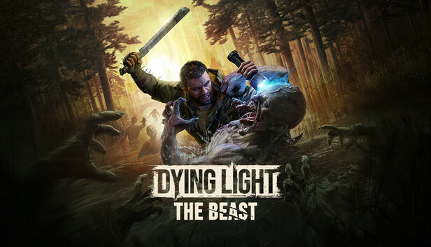
Dying Light: The Beast — Nova expansão que introduz mecânicas de sobrevivência radical e criaturas mutantes.
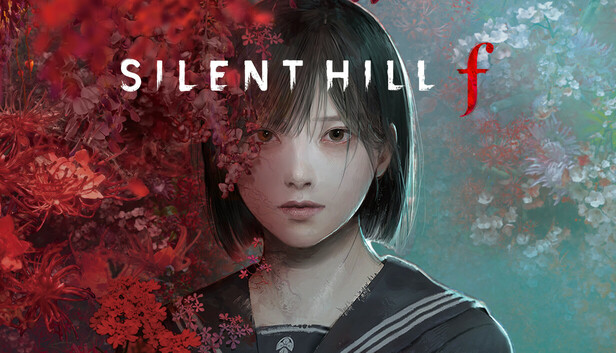
Silent Hill F — O renascimento da franquia de terror com uma história ambientada no Japão.